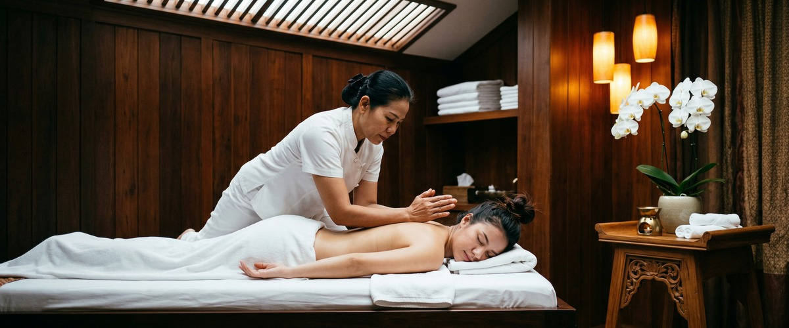
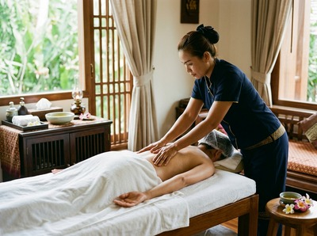

When you are feeling low, even ordinary days can feel like wading through something thick and heavy.

The pleasure drains out of things you usually enjoy, your energy dips, your shoulders tighten, and the weight of it all settles somewhere behind your eyes. If this sounds familiar, you are far from alone. And while massage is not a cure for low mood, it can play a meaningful role in helping your body and mind find their footing again. At Glasgow Thai Massage, we have seen it happen session after session: clients arriving carrying something heavy, leaving noticeably lighter.
Low mood, sometimes called depression or depressed mood, is a mental state characterised by persistent sadness, reduced motivation, and a diminished ability to find enjoyment in daily life. Depression as a mood state affects thoughts, behaviour, feelings, and sense of well-being, and touches an estimated 280 million people worldwide. It is not the same as simply having a bad day.

When low mood lingers, it shapes how you move through the world: sleep suffers, concentration falters, and the body often holds the strain physically as muscle tension, headaches, and fatigue.
Causes vary widely. Work pressure, relationship stress, grief, chronic pain, seasonal changes, and hormonal shifts can all contribute. The NHS guidance on low mood and depression notes that understanding what is driving your mood can help you find strategies that genuinely work. Massage is one of those strategies, particularly when the low mood has a strong physical component.
The connection between massage and mood is biochemical, not just intuitive. Research published on PubMed reviewing massage therapy and mood biochemistry found that massage consistently reduces cortisol levels while increasing serotonin and dopamine. When cortisol stays elevated over time, it keeps your nervous system in a state of low-level alarm that makes low mood significantly harder to shift.
Serotonin, by contrast, carries signals that reduce feelings of depression and restore a sense of calm. That shift does not happen by chance — it happens because skilled, sustained bodywork gives your nervous system permission to stand down.
If your body has been carrying your mood for weeks, that is exactly what it needs right now. Book your session today and give it the chance to begin letting go.
Traditional Thai massage works along the body's sen energy lines using acupressure and assisted stretching. It is particularly effective at interrupting the physical patterns that accompany low mood: the collapsed posture, the locked-up shoulders, the shallow breathing. When the body is helped to open and move freely, the nervous system responds.
Traditional Thai massage also encourages deeper breathing, which further supports the shift from a stressed, contracted state toward something more settled.
Thai oil massage combines therapeutic pressure with warm oils applied along the back, shoulders, and limbs. The warmth and sustained contact signal safety to the nervous system at a level below conscious thought. For clients whose low mood is tangled up with chronic tension, poor sleep, or physical exhaustion, this kind of session can feel like the first real rest they have had in weeks.
A session at Glasgow Thai Massage focused on low mood and emotional wellbeing is unhurried and attentive from the moment you arrive at our studio on West Nile Street in Glasgow City Centre. Maliwan, who trained at the Wat Pho Thai Massage School in Bangkok and has over 20 years of experience, understands that clients arriving in a low state need space as much as they need skilled hands. There is no pressure to explain yourself.
The session does the work.
Depending on what feels right for you, your therapist may recommend traditional Thai massage for its full-body, grounding quality, or Thai oil massage for its deeply calming, restorative effect. Either way, you leave the session with your cortisol lower, your body looser, and your mood meaningfully shifted.
Regular sessions, once a month at minimum, build on that effect over time. A single session helps. A consistent practice changes things.
Anyone carrying persistent low mood will find value in massage, but it tends to make the biggest difference for certain people. That includes office workers and professionals whose stress has accumulated slowly over months, and people going through difficult life transitions such as bereavement, relationship changes, or redundancy.
It also helps individuals whose low mood comes with physical symptoms like tight shoulders, disrupted sleep, or persistent fatigue, and those who want a complementary approach alongside talking therapy or other support.
If your body has been holding your mood for a long time, book online now and give it the chance to let some of it go.
Yes, and the evidence is biochemical rather than merely anecdotal. Research consistently shows that massage reduces cortisol, the stress hormone that sustains low mood, while increasing serotonin and dopamine, the neurotransmitters associated with positive mood and motivation. It is not a substitute for clinical treatment of depression, but for many people it provides genuine, measurable relief from the physical and emotional weight of feeling low.
Many clients notice a shift after a single session: a quieter mind, looser muscles, and a general sense of having exhaled. The more sustained changes in mood, sleep quality, and energy come with regular sessions, typically monthly as a minimum. Think of it less like a one-off treatment and more like a consistent practice that maintains the gains.
Both are effective, and the right choice depends on where your low mood tends to live in your body. Traditional Thai massage, performed fully clothed on a mat, works deeply through assisted stretching and acupressure and is excellent for clients who carry tension as physical tightness and restricted movement. Thai oil massage is particularly effective if your low mood is accompanied by exhaustion, poor sleep, or a need for deep, sustained calm. Your therapist at Glasgow Thai Massage will guide you toward the best option on the day.
It helps, but there is no obligation. Letting your therapist know allows them to tailor the pace, pressure, and focus of the session to what you actually need. At Glasgow Thai Massage, that information is received without judgement and used only to make your session more effective. You do not need to explain anything beyond what feels comfortable to share.
No. Massage is a powerful complementary support, not a clinical treatment for depression. If your low mood is persistent, significantly impacting your daily life, or accompanied by thoughts of self-harm, please speak to your GP or contact the NHS helpline. Massage works well alongside talking therapies and other forms of support, helping the body release tension while other treatments address the underlying causes.
Yes, and this is often where the effect is felt most immediately. Low mood frequently shows up in the body as tight shoulders, a heavy chest, shallow breathing, and persistent fatigue. Thai massage directly addresses all of these through acupressure, assisted stretching, and sustained contact that activates the parasympathetic nervous system. Clients regularly report sleeping better and feeling physically lighter after sessions, even when the emotional shift takes a little longer to arrive.